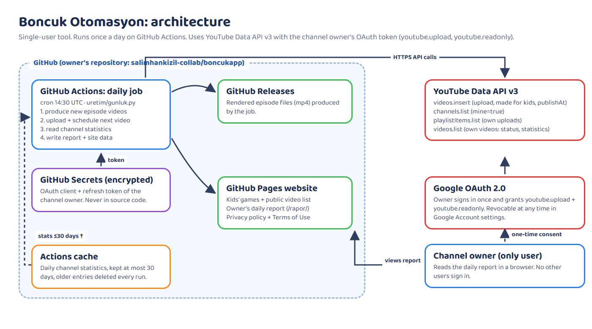
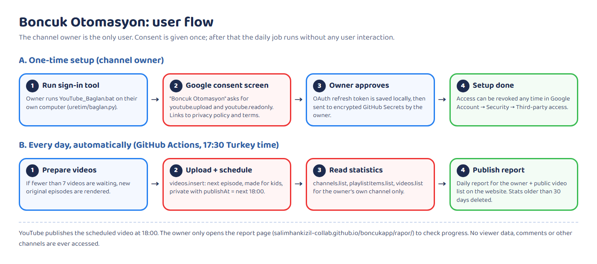

Boncuk
BoncukBoncuk Otomasyon
Channel helper app for the Boncuk Çocuk TV YouTube channel · Türkçe
Uses YouTube API Services. By using Boncuk Otomasyon you agree to be bound by the YouTube Terms of Service. See the Google Privacy Policy, our Privacy Policy and our Terms of Use.
What it does
Boncuk Otomasyon is a single-user tool used only by the owner of the Boncuk Çocuk TV channel. It is not offered to other users. Once a day it runs on GitHub Actions and:
- prepares the owner's own original kids' videos (Turkish and English colour and animal lessons);
- uploads the next video to the owner's own channel as made for kids and schedules it for 18:00 Turkey time (
videos.insert); - reads the channel's subscriber count, video list and per-video view and like counts (
channels.list,playlistItems.list,videos.list); - publishes a short daily report for the owner and lists the channel's public videos on the videos page.
It never reads viewers' personal data, comments, messages or subscriber lists, never changes other channels and never shows ads. Channel statistics are kept for at most 30 days.
Architecture

User flow

Source code and access
- Full source code: github.com/salimhankizil-collab/boncukapp (API calls in
uretim/youtube_api.py, daily job inuretim/gunluk.py). - Live output: daily report · videos page.
- Revoke access at any time: Google security settings.
- Contact: GitHub issues.
Türkçe özet
Boncuk Otomasyon, Boncuk Çocuk TV kanalının sahibinin kendi kullandığı bir yardımcı programdır ve YouTube API Hizmetlerini kullanır. Her gün kanal sahibinin kendi videosunu kendi kanalına "çocuklara özel" olarak yükleyip 18:00'e planlar, kanal istatistiklerini okuyup günlük rapor hazırlar. İzleyici verisi okunmaz, istatistikler en fazla 30 gün saklanır. Ayrıntılar: Gizlilik politikası · Kullanım şartları.